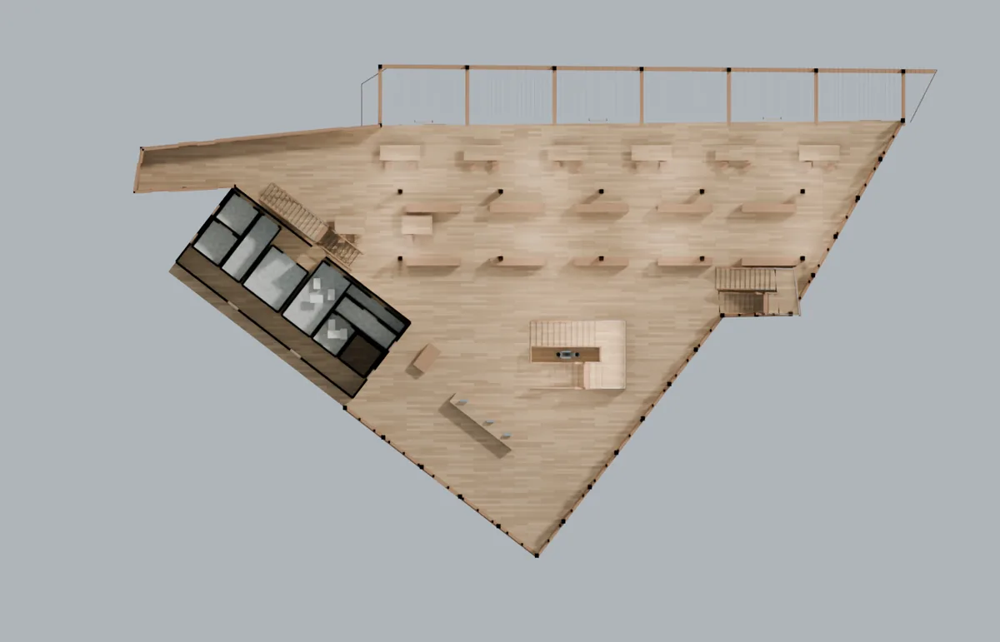

北投圖書館建模測試
兩天，用講的做出這棟建築的三維模型。沒有人畫圖，沒有人寫程式——像交代事務所同事一樣講需求、看成果、再講哪裡不對，改了五輪。
載入中
手指拖曳可以轉，兩指縮放。關掉「屋頂」「地形與周邊」就能看進室內。按「第一版」看兩天前的起點。
競圖提案用得上
| 基地與周邊現況 | 地形、鄰棟高度、道路與臨溪關係，兩天做出來，不必先排人力。 |
| 量體反覆改 | 講一句就改一版，兩天改了五輪。早上講，下午看。 |
| 簡報圖 | 外觀、剖面、室內透視，任何角度直接出，不必等人排。 |
| 這階段的精度剛好夠 | 競圖本來就不需要實測尺寸，比例對、關係對、能溝通就夠。 |
不能取代測繪、結構與法規計算、施工圖。
成果圖
第五版 兩天後



第三版 第一天結束


第一版 起點，只給了照片


怎麼交代它
| 你講的話 | 它做的事 |
|---|---|
| 建立建築物本身的模型(主要) 及周邊環境(次要) | 自己去公司作品庫找出 92 張照片、上網查地址與座標，做出第一版。沒有給尺寸，也沒有給構件清單。 |
| 差太多了 網路上可以找到北投圖書館平面圖、剖面圖 google map 也看得到 | 退回重做，並自己去找出那些圖說。 |
| 相對關係 你應該可以看得到 比例不要失真即可 | 知道容許誤差在哪，不會為了精確而卡住。 |
| 你要先確定 整個量體 比例是正確的 再來刻這些細節 | 先用航照校正量體，再做細部。過程中自己抓出先前把地圖比例尺讀錯。 |
| 玻璃應該是透明的 | 改掉材質。 |
| 平面、剖面 應該已經足以讓你建立相對正確的內部空間 （把圖拍給它看，沒標尺寸） |
讀出樓層標高，做出挑空、樓梯、隔間與家具。 |
| 有些地方還有破面、或欄杆等明顯有缺 你必須用剖面檢視 或進去裡面漫遊檢視 將其修正至合理化 |
自己剖開、自己走一遍，逐項補齊。 |
| 結構 例如梁柱沒有銜接到 之類的問題 你要也合理化 | 補上落地柱、邊梁與屋面承梁。 |
| 每一本書 建立了一個物件 造成現在模型過大 可以適當簡化 | 把書合併成書列，模型縮到十分之一，外觀不變。 |
來源
公司作品庫照片 92 張、內政部建研所《亞熱帶的綠建築挑戰》圖說、九典官網、FAM 準建築人手札、Google 地圖與街景。